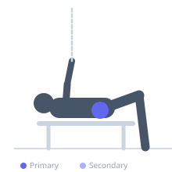

Exercise guide / Clamshell with Resistance Band
Clamshell with Resistance Band
The banded clamshell is a foundational hip abductor strengthening exercise performed side-lying. A resistance band placed above the knees increases the challenge compared to bodyweight alone. By rotating the top knee upward while keeping the feet together and pelvis stable, the gluteus medius and hip external rotators are isolated. This exercise is essential for knee and hip rehabilitation, correcting valgus collapse, and preventing IT band issues.
Primary muscles
gluteus medius
Secondary muscles
gluteus minimus
tensor fasciae latae
Stabilizers
gluteus maximus
Equipment
Resistance Band (Loop / Mini Band)


Starting position
- Lie on your side with hips stacked, knees bent to approximately 45 degrees and feet together. Place a resistance band just above both knees. Rest your head on your lower arm.
Setup
- Choose a band resistance that allows 15-20 quality reps with control. The band should not cause the pelvis to rotate during the movement.
Steps
- Step 1: Brace the core lightly and ensure the pelvis remains stacked and still throughout.
- Step 2: Keeping the feet together and the lower leg on the floor, rotate the top knee upward toward the ceiling like a clamshell opening.
- Step 3: Raise the top knee as high as possible without the pelvis tilting backward.
- Step 4: Slowly lower the knee back to the starting position under control. Complete all reps then switch sides.
Coaching cues
- Keep your pelvis still — do not let it roll back
- Think about leading with the outer hip, not the knee
- Control the return — do not let the band snap it down
Breathing
- Exhale as you open the knee upward. Inhale as you return to the starting position.
Range of motion
- Open to approximately 45-60 degrees of hip external rotation without pelvic rotation. Focus on quality, not range.
Tempo
- 2-1-2-1 (2s up, 1s hold at top, 2s down, 1s pause at bottom)
Common mistakes
- Rolling the pelvis backward to gain extra range — this removes glute med work
- Letting the top foot lift off the bottom foot
- Using too heavy a band and compensating with the hip flexors
Safety
- Consult a physiotherapist if you have hip labral pathology
- Keep the movement slow and controlled
Training
- endurance: 15–25 reps
- mobility: 10–15 reps
- endurance: 2–3 sets
- mobility: 2–3 sets
- Rest: {'endurance': 45, 'mobility': 60}